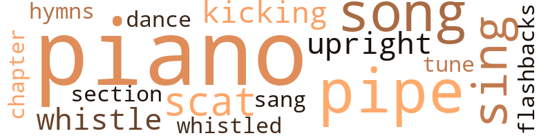
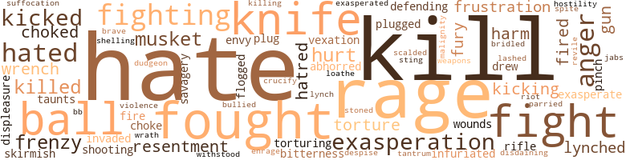

River of Eros, by Colter, Cyrus (1972)
43 music-related terms matched in this text.
Most frequent terms in this topic: piano (15); pipe (5); song (3); sing (3); upright (2)
chapter.n.01
Definition: a subdivision of a written work; usually numbered and titled
| word | sentence |
|---|---|
| chapter | Hammer stowed his brief case under the table , where it constantly bumped their feet , and launched into talk about his book - that morning from his copious notes he had dictated the last section of his chapter on the Negro church . |
dance.n.01
Definition: an artistic form of nonverbal communication
| word | sentence |
|---|---|
| dance | Suddenly , on entering his room , he broke into a wild dance , bleating out snatches of a bawdy song , as his knees gyrated and his elbows seesawed up and down : " I wanta big-legged Mama ! |
flashback.n.01
Definition: a transition (in literary or theatrical works or films) to an earlier event or scene that interrupts the normal chronological development of the story
| word | sentence |
|---|---|
| flashbacks | Yet , though weak from illness , exhausted by housework , she could not curb her rampant thoughts - myriad images , impressions , flashbacks , afterthoughts , surmises , crowded in on her brain . |
hymn.n.01
Definition: a song of praise (to God or to a saint or to a nation)
| word | sentence |
|---|---|
| hymns | Still , shortly before he died , Eugene would sit in the living room and listen while Letitia played and sang hymns . |
kick.v.04
Definition: kick a leg up
| word | sentence |
|---|---|
| kicking | Mama ! " she screamed , wallowing and kicking on the floor . |
| kicking | " Hi ! " she cried , kicking the door shut with her heel . |
piano.n.01
Definition: a keyboard instrument that is played by depressing keys that cause hammers to strike tuned strings and produce sounds
| word | sentence |
|---|---|
| piano | The furniture , though sturdy , was drab , and arranged around a massive old piano - a Knabe grand - given Clotilda years before by a wealthy white woman she had sewed for . |
| piano | Eugene had n't even liked the big piano - and it a gift . |
| piano | Clotilda calmly walked over and sat in the big armchair beside the piano , pointing Lester to a straight-back chair . |
| piano | The June sun , warm , mellow , was low in the west now and sent its flat bright rays through Clotilda 's curtains onto the piano keyboard . |
| piano | He had come home that afternoon and found her sitting at the old grand piano ; the ash tray before her was half-full of cigarette butts , as she bent over the keyboard in a deep , musing study , idly picking out with one finger the tune " The Last Rose of Summer . " |
| piano | Engrossed , she continued plunking one piano key at a time . |
| piano | Clotilda stood up from the piano . |
| piano | Lester backed up against the piano . |
| piano | Clotilda sat for awhile ; then got up and wandered over to the piano ; she stood over the keyboard , and , staring ahead out the window , began again her absent , idle , feeling and plunking of the keys . |
| piano | Clotilda sat down at the piano again , absently running her hand over the keys as she hummed " The Last Rose of Summer . " |
| piano | Clotilda still fingered the piano keys . |
| piano | Clotilda sat under the floor lamp near the piano pretending to read the evening paper . |
| piano | Lester , whom Addie had just served lunch , was ready to go play baseball , and stood near the piano wearing a catcher 's mask . |
| piano | Clotilda , her hands limp in her lap , now sat far back in the shadows , near the piano - remote from the front window . |
| piano | Addie 's young breasts rose and fell in quiet breathing as Clotilda sat , still curiously watching ; at times her gaze strayed over the room as if studying it for the first time ; there was the big old-fashioned bed , its pink spread under Addie , the lamp , the faded wallpaper with its moon-in-scimitar design , and over the bed the Kansas wheat field picture that had come as a gift with the grand piano . |
pipe.n.04
Definition: a tubular wind instrument
| word | sentence |
|---|---|
| pipe | He would only smile and knead his knuckles into his short kinky beard ; then maybe reach for his pipe or mug of coffee . |
| pipe | His little third-floor apartment , that so reflected himself , was dusty , cluttered with quality paperbacks , and reeked of acrid pipe tobacco . |
| pipe | Alexis , holding his pipe in his hand , was courteous . |
| pipe | Alexis began methodically filling his pipe , then grimly shook his head again . |
| pipe | Alexis was bitter now , though he finally lit his pipe . |
scat.n.01
Definition: singing jazz; the singer substitutes nonsense syllables for the words of the song and tries to sound like a musical instrument
| word | sentence |
|---|---|
| scat | Five minutes after she arrived little Lester was asleep and Zack had to put him on the back scat of a car . |
| scats | When overwhelmingly reassured , they took scats near the middle and stared around at the vacant hall . |
section.n.01
Definition: a self-contained part of a larger composition (written or musical)
| word | sentence |
|---|---|
| section | Hammer stowed his brief case under the table , where it constantly bumped their feet , and launched into talk about his book - that morning from his copious notes he had dictated the last section of his chapter on the Negro church . |
sing.v.02
Definition: produce tones with the voice
| word | sentence |
|---|---|
| sang | Still , shortly before he died , Eugene would sit in the living room and listen while Letitia played and sang hymns . |
| sing | " Nice educated boys do n't carry on like that , Lester , and sing those kinda songs . |
| sing | She had loved the song since girlhood ; her Aunt Clem had taught it to them , and she remembered how she and Pearlie used to sing it while washing dishes , Pearlie singing " lead " and Clotilda , alto . |
| sing | Pearlie had a nice voice and was proud of it , and - she well recalled - would sing a " solo " at the slightest hint . |
song.n.01
Definition: a short musical composition with words
| word | sentence |
|---|---|
| song | Suddenly , on entering his room , he broke into a wild dance , bleating out snatches of a bawdy song , as his knees gyrated and his elbows seesawed up and down : " I wanta big-legged Mama ! |
| songs | " Nice educated boys do n't carry on like that , Lester , and sing those kinda songs . |
| song | You have heard those words in a song , have you not ? |
| song | She had loved the song since girlhood ; her Aunt Clem had taught it to them , and she remembered how she and Pearlie used to sing it while washing dishes , Pearlie singing " lead " and Clotilda , alto . |
tune.n.01
Definition: a succession of notes forming a distinctive sequence
| word | sentence |
|---|---|
| tune | He had come home that afternoon and found her sitting at the old grand piano ; the ash tray before her was half-full of cigarette butts , as she bent over the keyboard in a deep , musing study , idly picking out with one finger the tune " The Last Rose of Summer . " |
upright.n.02
Definition: a piano with a vertical sounding board
| word | sentence |
|---|---|
| upright | Neeley sat bolt upright with joy . |
| upright | Addie sat bolt upright in bed , her stiff red Afro hair awry and her eyes in a wild , popping stare . |
whistle.v.01
Definition: make whistling sounds
| word | sentence |
|---|---|
| whistled | Sonny whistled and touched his black , pomaded hair . |
| whistle | She wished Dunreith could see it ; sometimes he gave a low whistle when she looked extra nice . |
| whistle | At eight-thirty sharp , Titus Neeley stuck his head in at the door , gawked around at the hall , and gave a low , startled whistle . |
164 violence-related terms matched in this text.
Most frequent terms in this topic: hate (10); kill (9); fought (8); rage (8); knife (6)
abhor.v.01
Definition: find repugnant
| word | sentence |
|---|---|
| abhorred | Yet he abhorred officiousness and though wanting to help , could not bring himself to ask unbidden questions . |
| loathe | " Why , they loathe and despise us . |
aggravation.n.01
Definition: an exasperated feeling of annoyance
| word | sentence |
|---|---|
| exasperation | Ruby spoke with cold exasperation . |
| exasperation | There was exasperation in his voice . |
| exasperation | In exasperation Addie bent to collect her books and purse from the floor . |
| exasperation | But Letitia 's white-powdered , long face showed added exasperation ; she sniffed testily , tugged her dress down over her knees , and rattled her bracelets . |
anger.n.01
Definition: a strong emotion; a feeling that is oriented toward some real or supposed grievance
| word | sentence |
|---|---|
| anger | So he joked with Sonny and kidded him along , but there wre times when he could not hide his smoldering anger and made snappish , cutting remarks . |
| anger | Alexis curled his lip in scornful anger . |
| anger | Suddenly , on seeing the young people , Letitia 's face went absent , glum ; soon she spoke with a nervous anger . |
| anger | Yet soon her face began to lose its anger , assuming again a more passive mien . |
annoyance.n.02
Definition: anger produced by some annoying irritation
| word | sentence |
|---|---|
| vexation | So she soon jumped up to go , again making violent beckoning motions to them - her black and white splotched face showed her vexation . |
bb.n.01
Definition: a small pellet fired from an air rifle or BB gun
| word | sentence |
|---|---|
| BB | Her breasts hung down like great dark loaves of dough , above pubic hair knotted into BB shot . |
blast.v.03
Definition: use explosives on
| word | sentence |
|---|---|
| shelling | Monday , a little man , jet black and Jamaican , sat on the porch shelling peas , as Dunreith - the Dodge 's radiator boiling - drove into the yard . |
blister.v.02
Definition: subject to harsh criticism
| word | sentence |
|---|---|
| scalded | " Grammaw , what 's wrong with Addie ? " he soon said , taking up the plate Clotilda had just washed and scalded . |
bridle.v.01
Definition: anger or take offense
| word | sentence |
|---|---|
| bridled | Hammer bridled ; his stubbornness returned . |
brush.n.06
Definition: a minor short-term fight
| word | sentence |
|---|---|
| skirmish | Now the British soldiers formed a skirmish line and tried to disperse the crowd , but it would not budge and instead jeered at the soldiers . |
contemn.v.01
Definition: look down on with disdain
| word | sentence |
|---|---|
| disdaining | Haynes , said Hammer , was the " super-patriot type " and exposed himself to enemy musket fire recklessly , disdaining the cover of the stone fences along the route of the advancing Britishers , and later as a regular soldier fought with " conspicuous gallantry " through to the end of the war . |
| despise | " Why , they loathe and despise us . |
craze.n.02
Definition: state of violent mental agitation
| word | sentence |
|---|---|
| frenzy | Addie had the first-floor bedroom alone , but the torments of the havoc she had worked beset her day and night ; her grandmother 's worsened , mind-bereft condition had panicked her and lacerated her conscience ; this latter was a new emotion and made somehow gaining forgiveness her present sole hysterical goal ; it was a need , a mania , comparable only to the frenzy of her self-reproach . |
| frenzy | Clotilda , in the frenzy of her pleading , started up - eyes wild , fanatical . |
| frenzy | Addie remembered the afternoon when , caught up in carnal love and tearful frenzy , they had vowed a suicide pact . |
crucify.v.01
Definition: kill by nailing onto a cross
| word | sentence |
|---|---|
| crucify | Oh , docs she rile me when she cries and goes on now , day and night , trying to beg back - so she can turn right around and crucify me to the cross all over again . |
defy.v.01
Definition: resist or confront with resistance
| word | sentence |
|---|---|
| withstood | Finally his deep , cadenced voice began : " ' Some village Hampden that with dauntless breast The little tyrant of his fields withstood , Some mute inglorious Milton here may rest , Some Cromwell guiltless of his country 's blood . ' " |
displeasure.n.01
Definition: the feeling of being displeased or annoyed or dissatisfied with someone or something
| word | sentence |
|---|---|
| displeasure | He picked up and scanned the evening paper , but felt jumpy , uneasy , irked ; he sensed Letitia 's displeasure at what he had said . |
draw.v.23
Definition: pull (a person) apart with four horses tied to his extremities, so as to execute him
| word | sentence |
|---|---|
| drew | Then , seeming to ponder for a moment , he drew up his long legs in embarrassment . |
dudgeon.n.01
Definition: a feeling of intense indignation (now used only in the phrase `in high dudgeon')
| word | sentence |
|---|---|
| dudgeon | But now as she sat in the waiting bus , gazing in a dudgeon out her window , she soon discovered her tensions slowly dissipating . |
enrage.v.01
Definition: put into a rage; make violently angry
| word | sentence |
|---|---|
| enrage | Whites ca n't understand why we act the way we do - why we deliberately do the things we know will most displease them , harry them , infuriate , enrage them - why we 're loud and contemptuous - why we yell , sometimes before we 're hurt , and revile - why we burn , rob , rape , and kill . |
envy.n.01
Definition: a feeling of grudging admiration and desire to have something that is possessed by another
| word | sentence |
|---|---|
| envy | Neeley was at first flabbergasted , then he felt the needle of envy and told himself the invitation could only swell Hammer 's head even more . |
fight.n.02
Definition: the act of fighting; any contest or struggle
| word | sentence |
|---|---|
| fighting | Alexis jumped aside as Dunreith got up fighting . |
fight.n.05
Definition: a boxing or wrestling match
| word | sentence |
|---|---|
| fight | " . . . We got in a fight . . . yes 'm . " |
| fight | " We got in a fight , that 's all . |
| fight | Anything can start a fight . " |
| fight | " Even the kids in the neighborhood are talkin ' about it - my grandson got in a bad fight about it only a week ago . " |
fight.v.02
Definition: fight against or resist strongly
| word | sentence |
|---|---|
| fighting | Went with first one man and then another ; and caused trouble for a lot of people ; grief to her family and all ; finally got her brother killed , fighting defending her reputation . |
| defending | Went with first one man and then another ; and caused trouble for a lot of people ; grief to her family and all ; finally got her brother killed , fighting defending her reputation . |
| fought | The blood spurted sideways onto the white enameled sink , but Ruby , her eyes back in her head , groped and fought for the knife . |
| fighting | But ever since then she could hardly remain in the same room with Addie without fighting off welling tears , and being shifty and evasive when they talked . |
| fighting | Hammer by then was finishing his sketchy background of the slave trade and of slavery in the colonies , and now approached the burden , the thesis , of his talk - " Ladies and Gentlemen , would you be at all surprised to learn that the first - notice I did not say the second ... or the fifth ... or the twenty-fifth - the first man to die fighting the British for American independence was a black ? |
| fighting | Now he told of how Lemuel Haynes , a minuteman , " covered himself with glory " fighting the British at the battles of Lexington and Concord . |
| fought | Haynes , said Hammer , was the " super-patriot type " and exposed himself to enemy musket fire recklessly , disdaining the cover of the stone fences along the route of the advancing Britishers , and later as a regular soldier fought with " conspicuous gallantry " through to the end of the war . |
| fought | She even sometimes fought a mania that somehow her history lay exhibited in a showcase , on display for all to see . |
| fought | You have fought honorably in every war the country 's fought . |
| fought | You have fought honorably in every war the country 's fought . |
| fought | Of course we fought in all those wars . . . . |
| fight | Addie panicked and began to fight . |
| fought | Clotilda , using her elbows , scooted forward and pinned Addie 's shoulders down ; the collar of the bag , wrenched airtight in one huge fist , cut into the flesh of Addie 's neck as she fought suffocation and the sudden , unknown weight athwart her . |
| fight | Then suddenly she began to fight . |
| fought | Addie 's eyes bulged like a frog 's ; her swollen freckled face was first crimson , then crimson-black ; she writhed , lurched , and fought , but finally her struggles began to lessen ; there came a debility in her waving arms and soon a lazy lassitude ; at last the bag violently collapsed , now billowed to almost bursting , then slowly , feebly , collapsed again . |
fit.n.01
Definition: a display of bad temper
| word | sentence |
|---|---|
| tantrum | But almost at once her tantrum subsided ; she sal gazing mournfully off into space again . |
flog.v.01
Definition: beat severely with a whip or rod
| word | sentence |
|---|---|
| flogged | At last he had Attucks flogged , and Attucks ran away - this was in 1750 . |
frustration.n.03
Definition: a feeling of annoyance at being hindered or criticized
| word | sentence |
|---|---|
| frustration | Lester , once inside , circled Addie in the middle of the floor , yelling at her , and bawling tears of rage and frustration , while Addie stood insolent and dry-eyed . |
| frustration | Alexis struck his forehead in frustration . |
fury.n.01
Definition: a feeling of intense anger
| word | sentence |
|---|---|
| rage | His tortured thoughts , and the burning whiskey in his empty stomach , made him hotter ; blind from pouring sweat and rage . |
| rage | A spasm of wild , shocked rage hit Clotilda . |
| rage | Poor , poor Addie - one minute Clotilda was wretched with pity for her , and in the next could have screamed at her in rage . |
| rage | Suddenly she broke into a crying , bawling rage and ran for the bedroom - the slamming bedroom door wafted down white plaster dust . |
| rage | Lester , once inside , circled Addie in the middle of the floor , yelling at her , and bawling tears of rage and frustration , while Addie stood insolent and dry-eyed . |
| rage | The soft , stitched scar over Dunreith 's eye grew bulbous now , kidney-red , from his distraught rage . |
| rage | Clotilda was suddenly , strangely , wrought up , furious ; her weeks of burden seemed now to set off a steeping rage against the world akin to paranoia . |
| fury | In her fury she had seemed to experience a mirage , a sudden illumination , and at once her evolving sense of relief brought quickened pulse strokes as her crumbling mind now saw visions she construed as hope . |
| fury | Addie spun around , fury in her eyes . |
| rage | Addie 's shock , her instant tears and cries of rage , had stopped and frightened Clotilda - who never broached the subject again . |
gag.v.06
Definition: cause to retch or choke
| word | sentence |
|---|---|
| choke | Now her emotion began to build , making her breathing choke and flutter , her eyes smart . |
| choked | Suddenly Dunreith kneed him in the testicles and the policeman , wide-eyed , choked and sat down on the floor . |
| choked | His big tears flew in Clotilda 's face and his weight nearly choked her . |
gun.n.01
Definition: a weapon that discharges a missile at high velocity (especially from a metal tube or barrel)
| word | sentence |
|---|---|
| gun | The stocky policeman now wheeled and put his gun in Alexis ' belly and frisked him , then hurled him toward the door . |
| gun | - If I had a gun I 'd kill you ! |
hate.n.01
Definition: the emotion of intense dislike; a feeling of dislike so strong that it demands action
| word | sentence |
|---|---|
| hatred | But Dunreith , whose hatred of policemen was psychotic , smiled . |
| hate | But what Dunreith and his ilk hate most of all is a phony God . |
| hatred | He had kept a steady vigil in or near her room during her bedfast days , and his seeming wild hatred had moderated the more he witnessed her distress , her remorse . |
| hate | Soon her gaze slowly swept the room as if to verify her whereabouts ; her nostrils flared with an occult hate . |
hate.v.01
Definition: dislike intensely; feel antipathy or aversion towards
| word | sentence |
|---|---|
| hated | In her heart she had n't grieved at his death ; she had n't loved him , nor had she hated him ; she just knew him . |
| hated | Still , she hated to think of herself as dumb , a " square " ; there was nothing worse , she thought ; many a wife , good women , had sat by and let their husbands get away with almost anything only because the wives did n't know the score ; or else acted like they did n't - buried their heads in the sand . |
| hate | One of these days he was going to get wise and maybe hate her . |
| hated | She 'd hated liquor at first , but gradually came to like it , with its fine little tingles in the pit of the stomach and the glow that came after . |
| hated | " By that time British troops were quartered in Boston - to put down any uprisings over the hated Taxation Act . |
| hate | It made me feel terrible - why , you acted like you hate her . " |
| hate | Sometimes I actually hate them , all of them - even myself - just as the whites do . |
| hate | They hate all governments by whites , no matter what their form . |
| hate | He 's awful warped - seems to hate the world and everything in it . " |
| hate | " I hate you , " she said . |
| hate | " All I know is , I hate you . " |
| hate | " Oh , Ambrose , I hate to leave so ! |
hostility.n.01
Definition: a hostile (very unfriendly) disposition
| word | sentence |
|---|---|
| hostility | He looked at Hammer steadily , earnestly , without hostility . |
infuriate.v.01
Definition: make furious
| word | sentence |
|---|---|
| exasperate | Clotilda was appalled - and the stricken look on her face seemed to exasperate Hyacinth . |
| infuriated | The presence of these troops infuriated the citizens . |
| exasperated | The woman soon seemed exasperated at no reply . |
injury.n.01
Definition: any physical damage to the body caused by violence or accident or fracture etc.
| word | sentence |
|---|---|
| harm | I 'm just sorry I got you mad at me , that 's all - I did n't mean any harm callin ' you up . |
| harm | " You ca n't go rushing into things like this - you can do more harm , you know , than good . " |
| hurt | The only thing she craved now was a period of calm , a letdown free of crisis , when her pulse did not race , nor head throb from some new hurt . |
invade.v.01
Definition: march aggressively into another's territory by military force for the purposes of conquest and occupation
| word | sentence |
|---|---|
| invaded | Hammer removed his pince-nez for a moment and chuckled - " Ladies and Gentlemen , just imagine this for a minute : maybe if the conditions of soil and climate had been different , had been reversed , we might have had the situation of a civil war in 1861 in which the South invaded the North to free the North 's slaves . " |
jab.n.02
Definition: a quick short straight punch
| word | sentence |
|---|---|
| jabs | Addie wore a strained , drawn , expression on her face and used her dust mop now with desperate little jabs . |
kick.v.04
Definition: kick a leg up
| word | sentence |
|---|---|
| kicking | Mama ! " she screamed , wallowing and kicking on the floor . |
| kicking | " Hi ! " she cried , kicking the door shut with her heel . |
kick_back.v.02
Definition: spring back, as from a forceful thrust
| word | sentence |
|---|---|
| kicked | The crazed , stocky policeman now threw back a chair for more room ; then lunged and kicked Dunreith in the liver . |
| kicked | Addie , removing the books and purse to the floor , sat in the chair , scooted down , and shot her legs out straight , then kicked off her shoes . |
| kicked | Clotilda kicked her housecoat free and stepped back . |
| kicked | She put on the underclothes she had laid out , kicked off her mules and lay wearily on her back across the bed . |
kill.v.10
Definition: cause the death of, without intention
| word | sentence |
|---|---|
| killed | Went with first one man and then another ; and caused trouble for a lot of people ; grief to her family and all ; finally got her brother killed , fighting defending her reputation . |
| kill | Zack would kill him if he knew . |
| kill | Then each time before she went home he 'd make her chew coffee grounds to kill her breath . |
| kill | " Well , once wo n't kill you , " Clotilda said , unmoved . |
| killed | He told how Salem shot and killed Major Pitcairn , a British officer , at the moment Pitcairn was leading a charge and shouting to his Hessian troops - " The day is ours ! " |
| kill | - Lord , you 'll kill yourself on that book . " |
| kill | Whites ca n't understand why we act the way we do - why we deliberately do the things we know will most displease them , harry them , infuriate , enrage them - why we 're loud and contemptuous - why we yell , sometimes before we 're hurt , and revile - why we burn , rob , rape , and kill . |
| killing | Clotilda wondered ; no , just killing time , probably ; did n't necessarily look unhappy ; maybe waiting for her husband 's plane ; not sole and solitary like herself . |
| kill | Oh , does it kill him when I tell about my kids . " |
| kill | " I oughta kill you , " Rosie said , panting , but she soon sat back on the seat again . |
| kill | Finally sated , he turned to Monday - " Let 's kill one of them gospel birds and fry him . " |
| killed | " You 're lucky as hell - it coulda killed you . |
| kill | - If I had a gun I 'd kill you ! |
knife.n.02
Definition: a weapon with a handle and blade with a sharp point
| word | sentence |
|---|---|
| knife | He went on cutting a piece of meat on his plate with a steak knife and forked it into his mouth , never looking up . |
| knife | " You street-walkin ' whore , " he said , and picked up the knife . |
| knife | You know I ----------- " He drove the knife six inches into her throat , just over the collarbone . |
| knife | The blood spurted sideways onto the white enameled sink , but Ruby , her eyes back in her head , groped and fought for the knife . |
| knife | Zack , knife in hand , stood breathing over her . |
| knife | Rosie opened the cardboard box on the back seat beside her and used a table knife to slice out the wedge of cake . |
lynch.v.01
Definition: kill without legal sanction
| word | sentence |
|---|---|
| lynched | - ask African university students who 've studied there , who 've been beaten and nearly lynched in the streets for dating Russian girls . |
| lynched | And lynched nine thousand of us , outright - not even counting the ' legal ' lynch-ings in the courts . |
| lynch | Why , I 'd lynch him if he ever hurt you - that is , more 'n he has already . " |
malevolence.n.01
Definition: wishing evil to others
| word | sentence |
|---|---|
| malignity | For a moment the malignity in her features gave way to maternal wonderment . |
malice.n.01
Definition: feeling a need to see others suffer
| word | sentence |
|---|---|
| spite | Pearl rolled her eyes in playful spite . |
musket.n.01
Definition: a muzzle-loading shoulder gun with a long barrel; formerly used by infantrymen
| word | sentence |
|---|---|
| musket | At last one boy threw his stick at a soldier and hit him , and the soldier struck the boy in the face with the butt of his musket . |
| muskets | The scene of the shooting is represented on a bronze tablet - the smoking muskets of the British soldiers still raised , Attucks lying dead on the ground , and the wounded falling back into the arms of their comrades . |
| musket | Haynes , said Hammer , was the " super-patriot type " and exposed himself to enemy musket fire recklessly , disdaining the cover of the stone fences along the route of the advancing Britishers , and later as a regular soldier fought with " conspicuous gallantry " through to the end of the war . |
musket_ball.n.01
Definition: a solid projectile that is shot by a musket
| word | sentence |
|---|---|
| ball | " Okay - if I could only be out to that ball park tonight , " Sudsie sighed and departed down the bar to other patrons . |
| balls | Addie , watering a fern , cut in - " We 're going to have meat balls and spaghetti for dinner , " she said brightly . |
| ball | Now you got ta go play ball . |
| ball | Well , go ahead , then - go on and play ball . " |
| ball | Oh , you should 've seen her , Addie - a wiry little pint-sized woman . . . with straight , iron-grey hair that she wore with a little ball at the back - they say she was part Cherokee . |
| balls | Staring at the ceiling , she thought briefly of dinner and of how hungry Lester would be , but fixing meat balls and spaghetti was easy , so she need n't start till five ; there was time for a rest and maybe too a nap . |
open_fire.v.01
Definition: start firing a weapon
| word | sentence |
|---|---|
| fire | Sometimes he playfully cursed " Sudsie , " the bartender , threatening to buy the " Oasis " and fire him ; or he might sit at the bar in silence , sullen and mean , his arms thrust forward around his drink , glowering into the mirror . |
| fired | They fired at once , and Attucks fell dead . |
| fired | Letitia , stilt-tall in high heels , fired a shower of smiles at him , then went on down the hall to her room . |
pain.v.02
Definition: cause emotional anguish or make miserable
| word | sentence |
|---|---|
| hurt | But I do n't hurt so much as I did , somehow . " |
| hurt | Why , I 'd lynch him if he ever hurt you - that is , more 'n he has already . " |
parry.v.01
Definition: impede the movement of (an opponent or a ball)
| word | sentence |
|---|---|
| parried | " . . . Sure . . . only I did n't know you 'd be goin ' today , " Lester parried . |
pinch.n.02
Definition: an injury resulting from getting some body part squeezed
| word | sentence |
|---|---|
| pinch | Well , he had n't bought it for her ; it was hers ; she had even offered to lend him money in a pinch ; Mabel was n't a bad girl , but just a playgirl . |
punch.v.01
Definition: deliver a quick blow to
| word | sentence |
|---|---|
| plug | Better to shut your eyes and plug your cars . |
| Plugged | " Plugged air vent , " Sonny said , " and a carburetor adjustment . |
resentment.n.01
Definition: a feeling of deep and bitter anger and ill-will
| word | sentence |
|---|---|
| resentment | Sonny 's face showed his resentment ; he was silent . |
| bitterness | So in the end it was the people living where slavery was not a sound business proposition that attacked it with so much bitterness on moral grounds . " |
| resentment | Her resentment mounted . |
rifle.n.01
Definition: a shoulder firearm with a long barrel and a rifled bore
| word | sentence |
|---|---|
| rifle | By habit Neeley spoke so fast his speech came in a spate of words loosed like a clip of automatic rifle fire . |
riot.n.01
Definition: a public act of violence by an unruly mob
| word | sentence |
|---|---|
| riot | Finally she placed it back in the box and turned to them again , her dark face a riot of smiles . |
savageness.n.01
Definition: the property of being untamed and ferocious
| word | sentence |
|---|---|
| savagery | Hammer sat down on the side of his bed , fearfully waiting , awed by the savagery of the storm . |
shooting.n.02
Definition: killing someone by gunfire
| word | sentence |
|---|---|
| shooting | The scene of the shooting is represented on a bronze tablet - the smoking muskets of the British soldiers still raised , Attucks lying dead on the ground , and the wounded falling back into the arms of their comrades . |
sting.n.03
Definition: a painful wound caused by the thrust of an insect's stinger into skin
| word | sentence |
|---|---|
| sting | Addie 's eyes began to sting , her throat to swell . |
stone.v.01
Definition: kill by throwing stones at
| word | sentence |
|---|---|
| stoned | I figured you 'd be stoned , all right - and you are , I see . |
strong-arm.v.02
Definition: be bossy towards
| word | sentence |
|---|---|
| bullied | Clotilda , then still uncomprehending , mouth agape , had finally rushed him , cuffing him like a bear ; he spun around against a chair and half-sat down , before she bullied him back to his room ; then , in Addie 's presence , she grilled the facts from Letitia and instantly herself took up screaming at Addie . |
suffocation.n.01
Definition: killing by depriving of oxygen
| word | sentence |
|---|---|
| suffocation | Clotilda , using her elbows , scooted forward and pinned Addie 's shoulders down ; the collar of the bag , wrenched airtight in one huge fist , cut into the flesh of Addie 's neck as she fought suffocation and the sudden , unknown weight athwart her . |
torment.v.01
Definition: torment emotionally or mentally
| word | sentence |
|---|---|
| torturing | Now poor Pearlie was in her everlasting sleep ; likewise her husband Chester , with his torturing arthritis , less than a year later - how the millstone of time ground on , Clotilda , her eyes and temples aching , opened the refrigerator . |
| torture | - can only be likened to the Nazi torture camps at Dachau and Belsen - sometimes half the shipment perished . |
| torture | He loves his grandmother so - her misery is torture to him . |
twit.n.02
Definition: aggravation by deriding or mocking or criticizing
| word | sentence |
|---|---|
| taunts | One evening - in March of 1770 - some boys -- in the street , carrying sticks , shouted taunts at some of the soldiers . |
vilify.v.01
Definition: spread negative information about
| word | sentence |
|---|---|
| revile | Whites ca n't understand why we act the way we do - why we deliberately do the things we know will most displease them , harry them , infuriate , enrage them - why we 're loud and contemptuous - why we yell , sometimes before we 're hurt , and revile - why we burn , rob , rape , and kill . |
violence.n.01
Definition: an act of aggression (as one against a person who resists)
| word | sentence |
|---|---|
| violence | We 're on the threshold of nothing - except violence . " |
weapon.n.01
Definition: any instrument or instrumentality used in fighting or hunting
| word | sentence |
|---|---|
| weapons | The stocky policeman now dove for Dunreith and hugged him , patting his pockets for weapons . |
weather.v.01
Definition: face and withstand with courage
| word | sentence |
|---|---|
| brave | " You got to be a brave girl , now , when he comes in . " |
whip.v.04
Definition: strike as if by whipping
| word | sentence |
|---|---|
| lashed | She was frightened by Lester 's maturity , his push , and began to wonder what kind of man he would be - because new , unsuspected traits were showing , especially his temper ; she recalled how frantic , uncontrollable , and lashed with shame he had been the night he brought Addie and Letitia home from the lodge hall . |
wound.n.01
Definition: an injury to living tissue (especially an injury involving a cut or break in the skin)
| word | sentence |
|---|---|
| wounds | Two of his white comrades , James Caldwell and Samuel Gray , also fell with mortal wounds and died that night . |
wrath.n.01
Definition: intense anger (usually on an epic scale)
| word | sentence |
|---|---|
| wrath | Soon the bus driver came down the aisle to collect the fares ; when he had returned to his seat , he started the motor and headed out toward the Kennedy Expressway and downtown Chicago , Clotilda 's mind sped ahead home ; she felt a strange inner wrath at that household , and , excepting Lester , everyone in it ; they had betrayed , rejected , her , she thought ; now she would pay them back - leave , desert , them . |
wrench.n.01
Definition: a sharp strain on muscles or ligaments
| word | sentence |
|---|---|
| wrench | Flood fumbled in his tool kit for a wrench . |
| wrench | Heavy Clotilda , panting and sweating atop her like a rapist , gave the bag one final , vicious wrench . |
62 religion-related terms matched in this text.
Most frequent terms in this topic: God (16); devil (4); heaven (4); church (4); temples (4)
baptist.n.01
Definition: follower of Baptistic doctrines
| word | sentence |
|---|---|
| Baptist | Lord Nelson whispered to Hammer , " She goes to Root Street Baptist now - I see her there on Sunday mornin 's sometimes . " |
blessing.n.05
Definition: the act of praying for divine protection
| word | sentence |
|---|---|
| blessings | She stared out again through the wet pane of glass at the strange night 's blackness ; daring to trust it had brought sweet blessings after all and at last . |
christendom.n.01
Definition: the collective body of Christians throughout the world and history (found predominantly in Europe and the Americas and Australia)
| word | sentence |
|---|---|
| Christendom | In the kitchen now he poured himself a mug of coffee and took it into the living room , where he sat down and resumed reading a paperback - Kierkegaard 's " Attack on Christendom . " |
christian.n.01
Definition: a religious person who believes Jesus is the Christ and who is a member of a Christian denomination
| word | sentence |
|---|---|
| Christians | Clotilda , a few years ago , had mentioned him once , wondering , asking if they should n't try to be Christians and pray for him , write to him , maybe ; Clotilda had said a person , a child , should n't begin life with such bitter , awful feelings toward another ; it was not healthy , she said - especially toward a father , no matter what he had done . |
church.n.02
Definition: a place for public (especially Christian) worship
| word | sentence |
|---|---|
| church | The preachers and the church people were always saying it was to test you , to try your faith . |
| church | We could do more things together - go to the movies . . . that is , nice movies , and go to church ; you could have a party for your friends right here in the house if you wanted to . " |
| church | Hammer stowed his brief case under the table , where it constantly bumped their feet , and launched into talk about his book - that morning from his copious notes he had dictated the last section of his chapter on the Negro church . |
church.n.04
Definition: the body of people who attend or belong to a particular local church
| word | sentence |
|---|---|
| church | At church picnics , down in North Carolina when I was a kid , she and I used to play the menfolks . |
curate.n.01
Definition: a person authorized to conduct religious worship
| word | sentence |
|---|---|
| pastor | Clotilda and Pearl always talked about " home " back in Paducah , and about their Aunt Clem , who had reared them ; about the high rents in Chicago , hopes for some new furniture , their pastor , and their husbands . |
eden.n.01
Definition: any place of complete bliss and delight and peace
| word | sentence |
|---|---|
| heaven | " Only Jesus in heaven knows that . " |
| heaven | Poor , poor Ruby - if there was a heaven , she was surely there . |
| heaven | " But Lord in heaven , what 'll you two do when I pass on ? |
| heavens | Then the heavens opened up and dumped an ocean of rain water on the streets , turning them into swirling , dirty streams . |
| heaven | It was a low-down trick , but I pulled it and been mortally sorry ever since - God in heaven knows I have . |
god.n.03
Definition: a man of such superior qualities that he seems like a deity to other people
| word | sentence |
|---|---|
| God | " Honest to God , Addie , you 're the limit . " |
| God | What in God 's name could be done for Addie ? |
| God | God did some funny things in this world ; you 'd drive yourself batty trying to figure them out . |
| God | She sensed Him more as an angry God . |
| God | Yet , despite all our mistreatment and suffering , we insist on praising God . " |
| God | Oh , we can be so stupid , Mr. Hammer - God this , God that , God the other . . . and listening to all those greasy , pompous , chicken-eating , traitorous preachers . |
| God | Oh , we can be so stupid , Mr. Hammer - God this , God that , God the other . . . and listening to all those greasy , pompous , chicken-eating , traitorous preachers . |
| God | But what Dunreith and his ilk hate most of all is a phony God . |
| God | " Honest to God , Prof , that girl 's saved your life . |
| God | Honest to God , I do n't . |
| God | " Oh , thank God the doctor 's here - thank God . " |
| God | " Oh , thank God the doctor 's here - thank God . " |
| God | God being my Judge and Maker , this is true . |
| God | Honest to God , I am . |
| God | - You said it was the works of God . " |
| God | Plow in God 's name could Eugene be so blind to the ways of a woman ! |
hell.n.01
Definition: any place of pain and turmoil
| word | sentence |
|---|---|
| hell | What the hell was Ruby up to ? |
| hell | " Why , God-damn it , " he said , loud enough for the redheaded toll attendant to hear , " I 'd sooner be in hell with my back broke than be white . " |
hymn.n.01
Definition: a song of praise (to God or to a saint or to a nation)
| word | sentence |
|---|---|
| hymns | Still , shortly before he died , Eugene would sit in the living room and listen while Letitia played and sang hymns . |
jesus.n.01
Definition: a teacher and prophet born in Bethlehem and active in Nazareth; his life and sermons form the basis for Christianity (circa 4 BC - AD 29)
| word | sentence |
|---|---|
| Jesus | " Only Jesus in heaven knows that . " |
| Jesus | Then she wailed - " Lord Jesus - Dunreith , suppose he ai n't there - Oh , Lord . " |
jew.n.01
Definition: a person belonging to the worldwide group claiming descent from Jacob (or converted to it) and connected by cultural or religious ties
| word | sentence |
|---|---|
| Jews | If Soviet Russia persecutes Jews , what would it do to blacks ? |
messiah.n.01
Definition: any expected deliverer
| word | sentence |
|---|---|
| Christ | Christ , think ! " |
muse.n.01
Definition: in ancient Greek mythology any of 9 daughters of Zeus and Mnemosyne; protector of an art or science
| word | sentence |
|---|---|
| muse | Besides being a heroin addict , he was a strange , mostly gentle , young man - a college dropout - who would sit and muse , daydream , for hours . |
prayer.n.01
Definition: the act of communicating with a deity (especially as a petition or in adoration or contrition or thanksgiving)
| word | sentence |
|---|---|
| prayer | But Clotilda , uncomprehending , would only sit and watch her maunderings , or move her lips as in some feverish , wistful prayer . |
| prayers | It was after midnight that same night when Clotilda said her brief perfunctory prayers and climbed into bed beside Addie , who had been asleep for almost an hour . |
preacher.n.01
Definition: someone whose occupation is preaching the gospel
| word | sentence |
|---|---|
| preachers | The preachers and the church people were always saying it was to test you , to try your faith . |
| preacher | The skinny one with the bushy mustache howled ; bent over laughing , he turned to his bearded , stoop-shouldered friend and pointed up at Hammer - " Is tha ' sonofabitch a preacher , or what ! |
| preachers | Why , the preachers do , of course - yea , brethren . |
| preachers | Oh , we can be so stupid , Mr. Hammer - God this , God that , God the other . . . and listening to all those greasy , pompous , chicken-eating , traitorous preachers . |
religion.n.01
Definition: a strong belief in a supernatural power or powers that control human destiny
| word | sentence |
|---|---|
| faith | The preachers and the church people were always saying it was to test you , to try your faith . |
| faith | Well , try your faith in what ? |
| religion | . . . books on politics , books on science , books on philosophy , on guv ' ment , on religion , on law , on civil rights ; he is an authority on the life of the late Dr. Martin Luther King - an ' last but not least , books on history . |
| religion | " You musta heard the preachin ' and come in here to get religion . . . haw ! " |
| faith | He smiled - " Love , you know - just like faith - some - times can move mountains . " |
satan.n.01
Definition: (Judeo-Christian and Islamic religions) chief spirit of evil and adversary of God; tempter of mankind; master of Hell
| word | sentence |
|---|---|
| devil | Gone to the devil in hell already . |
| devil | " Well , it 's one devil of a note . . . after you 've gone to all that trouble getting your speech together . " |
| devil | But Addie herself 's driven by the very devil , it seems like . |
| devil | I see her and I see the devil . |
sermon.n.02
Definition: a moralistic rebuke
| word | sentence |
|---|---|
| sermon | " And can preach the loveliest sermon - makes 'em cry . |
siren.n.01
Definition: a sea nymph (part woman and part bird) supposed to lure sailors to destruction on the rocks where the nymphs lived
| word | sentence |
|---|---|
| sirens | Then the wails of approaching police sirens came in through the screened windows . |
| siren | Somewhere , far off , a fire engine siren 's caterwauling came through the night , wailing unendingly before finally dying away . |
temple.n.03
Definition: an edifice devoted to special or exalted purposes
| word | sentence |
|---|---|
| temple | Above the desk lamp 's cone of light his face , dark , massive , sober , its tree-trunk sideburns like grizzled shadows down both his checks , hovered over the manuscript ; and high on his broad nose perched the pince-nez , from which the tiny gold chain shimmied at his temple . |
| temples | Now poor Pearlie was in her everlasting sleep ; likewise her husband Chester , with his torturing arthritis , less than a year later - how the millstone of time ground on , Clotilda , her eyes and temples aching , opened the refrigerator . |
| temples | The house was not hot , but tiny beads of sweat stood out on Hyacinth 's yellow forehead and glinted through the short hair at her temples . |
| temples | He was shiny bald now , with his smooth brown skin stretched parchment-tight over his skull ; the short , stubborn hair at his temples was grey . |
| temple | The tiny chain on his pince-nez dangled at his temple precariously as he closed the door and gazed around at Clotilda and Lester who were now watching television in the living room . |
| temples | Addie looked haggard , spent , and went over and sat on the tall kitchen stool , pressing finger tips to both temples . |